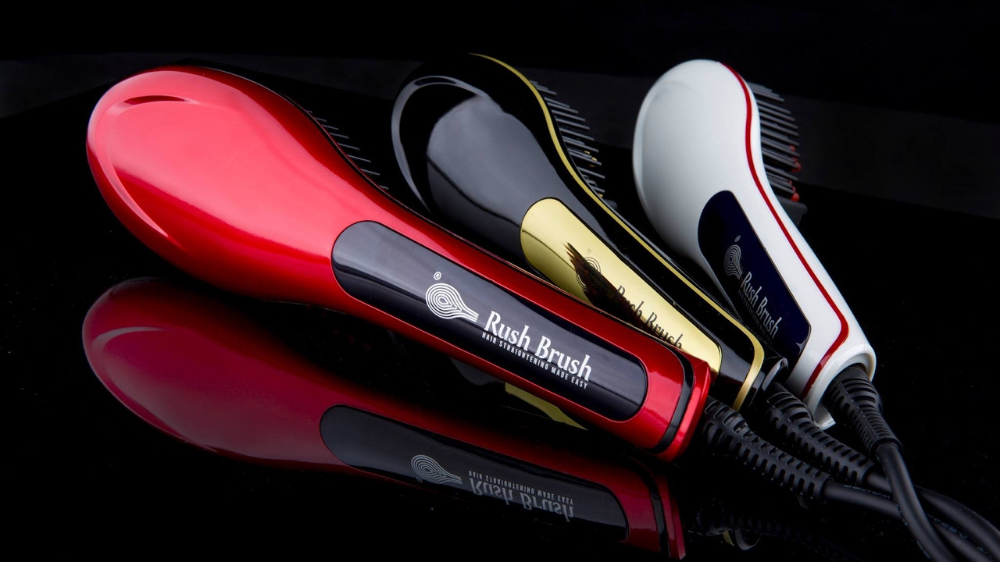

<!-- <app-navbar></app-navbar> -->

<div class=" container">

    
    <div class="bigbox">    
       <div class="text-center">
        
       </div>
       <br>
  <h2 class="m-1 p-2">أنواع الشعر المختلفه</h2>
  <br>
 <div class="mb-5 p-2 m-1">

  <p>علي الرغم من اختلاف أنواع الشعر وخصائصه، إلا أن ما يتفق عليه الجميع هو أن الشعر هو تاج الرؤوس.

   وهو أحد أهم مفاتن النساء التي تضفي عليها جمالاً خاصاً. ولا يخفي علينا حرص كل فتاة علي التعرف علي خصائص الشعر الخاص بها من أجل امتلاك الشعر الصحي الجذاب الذي يمتاز بطوله وسحره وكثافته وجاذبيته.
   
   لكن سيدتي ليت الأماني بالتمني ! .. فالحصول علي شعر ناعم وصحي وجميل ليس بالأمر السهل .
   
   ولكنه ليس بالأمر المستحيل في نفس الوقت، فا ما يتطلبه الأمر منك هو أن تعطي شعرك بعض الاهتمام
   وأن توليه العناية والرعاية اللازمة وتتعاملي معه بالطرق الصحيحة المناسبة له.</p>
 
   <p style="font-weight: bold;">الشعر الدهني</p>
   <p>الشعر الدهني هو ذلك الشعر الذي تظهر عليه الدهون نتيجة زيادة الإفرازات الدهنية من الغدد الموجودة في فروة الرأس والبشرة.

      قد يعتبر البعض أن الإفرازات الدهنية هي شيء ضار، بالطبع لا.
      
      فهي شيء طبيعي وضروري للحفاظ علي الشعر والإبقاء علي لمعانه.</p>
      <br>

      <p style="font-weight: bold;">الشعر الجاف</p>
      <p>يمكن تعريفه بأنه هو ذلك الشعر الذي يتعرض فوراً للجفاف بعد غسله ويفقد لمعانه بسرعة جدا.

         كما ذكرنا في النوع السابق،الشعر الدهني؛ أن زيادة إفرازات الغدد الدهنية هي سبب تكون الشعر الدهني.
         
         بالمثل ،عندما تقل إفرازات الغدد الدهنية بشكل كبير يؤدي ذلك إلي جفاف الشعر وفقدانه لحيويته ولمعانه.</p>
  <br>
 <p style="font-weight: bold;">  الشعر العادي</p>
 <p>هذا النوع يعتبر وسط النوعين السابقين (الدهني والجاف)، فلا يكون لامع بدرجة كبيرة ممتلئ بالدهون.

   في نفس الوقت لا يكون جاف، بل هو وسط بين النوعين حيث يوجد توازن في كمية الزيوت المنتجة عن طريق فروة الرأس.</p>
      </div>
    </div>
</div>

